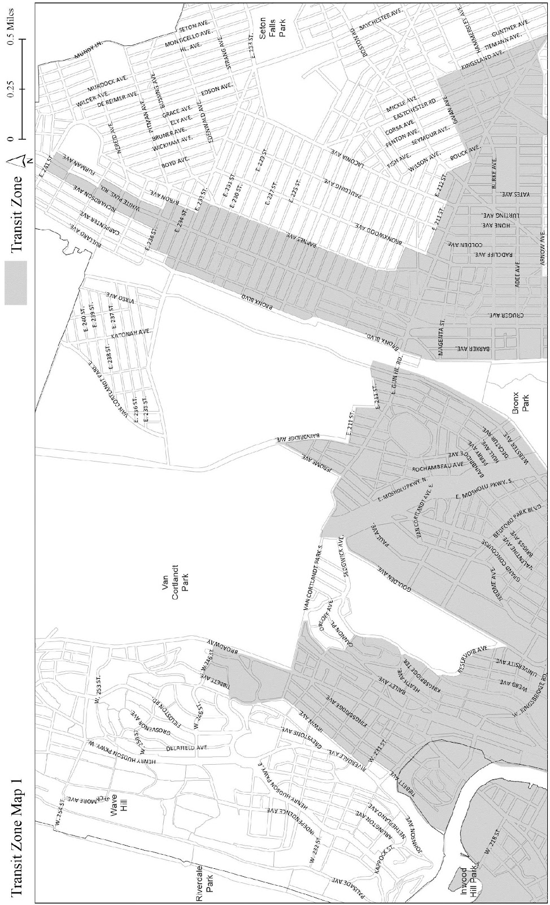

Last amended 2024-11-21
(8/15/24)
APPENDIX I
The boundaries shown on the maps in this APPENDIX include:
all of Manhattan Community Districts 9, 10, 11 and 12;
all of Bronx Community Districts 1, 2, 4, 5, 6 and 7; and
all of Brooklyn Community Districts 1, 2, 3, 4, 6, 7, 8, 9 and 16.
Portions of other Community Districts are shown on Maps 1 through 15 in this APPENDIX.
Transit Zone Map 1

Transit Zone Map 2
Transit Zone Map 3
Transit Zone Map 4
Transit Zone Map 5
Transit Zone Map 6
Transit Zone Map 7
Transit Zone Map 8
Transit Zone Map 9
Transit Zone Map 10
Transit Zone Map 11
Transit Zone Map 12
Transit Zone Map 13
Transit Zone Map 14
Transit Zone Map 15